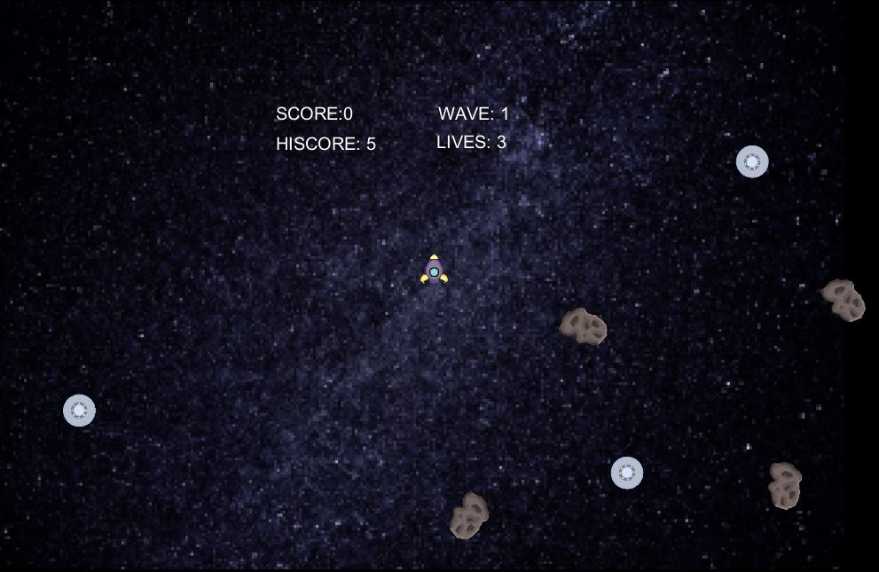

April 12, 2019

UFO
Game Credits: William - Coding, Lasers Vanna - Spaceship, Alien Ship, Asteroids Background - http://www.space2idgo.eu/home/star-1050487/
The goal in this game is to shoot all the alien ships while trying to avoid asteroids at the same time. Shooting all the alien ships will allow the player to progress onto the next wave. The keys are W to move forward, S to move backwards, A and D to turn the rocket ship and click the left mouse key to shoot lasers.
Some issues in this game are not being able to progress to next wave after shooting all the alien ships and the alien ship moving on top of the rocketship. For the first issue, the player has to shoot an asteroid and that would allow them to move onto the next wave. On the second issue, the alien ship moves onto the rocketship and the rocketship doesn't have their life deducted. It is until the rocket ship moves away from the alien ship then the life gets deducted. These are some issues that I want to fix.
In this game, the alien ships are now following the rocket ship. The background image and the explosion sound has been included. There are many things I want to include which are the game start screen, explosion animation when the ship runs out of three lives, and the ending screen to show the score results.